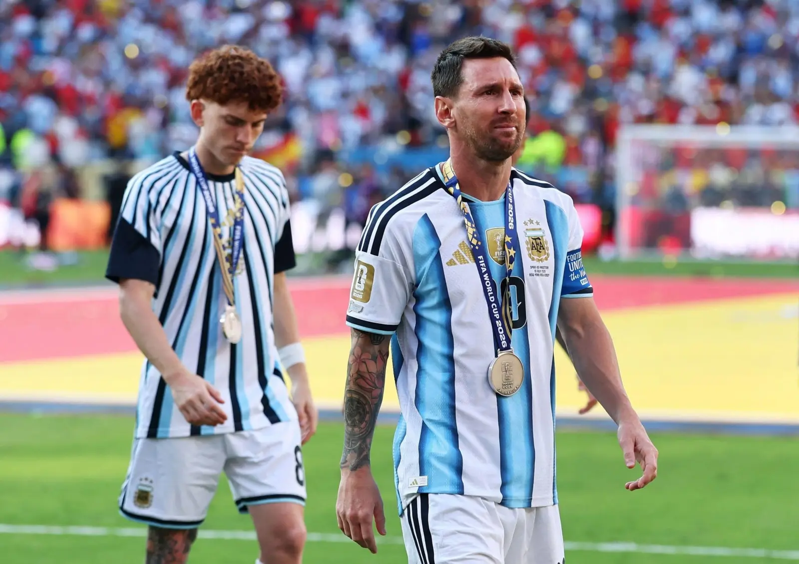
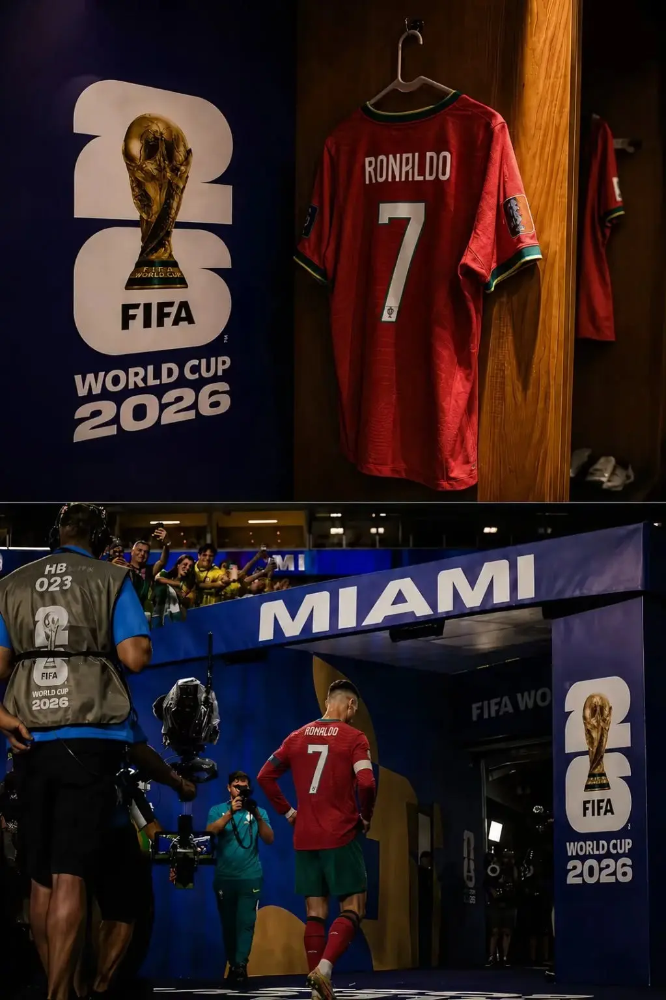
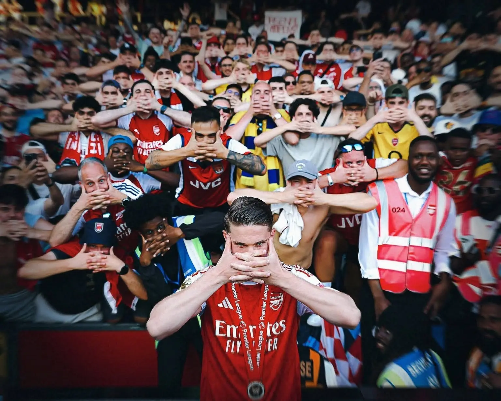
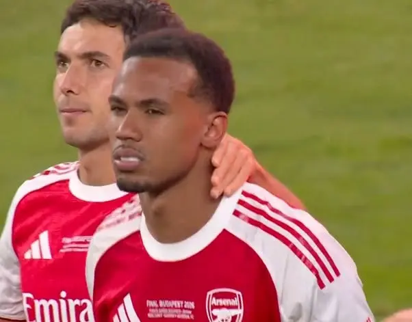

Nine Years in One Afternoon
Chín năm sống bằng thì tương lai, rồi một buổi chiều Arsenal cuối cùng cũng có hôm nay.
Kho bài viết
Các bài viết sẽ được sắp theo thời gian và theo mạch cảm xúc, để người đọc có thể bắt đầu từ một cái tên rồi đi tiếp qua cả một giai đoạn.
Chín năm sống bằng thì tương lai, rồi một buổi chiều Arsenal cuối cùng cũng có hôm nay.

Gheorghe Hagi, Romania 1994 và một thế hệ khiến cả đất nước tin rằng những cánh cửa lớn nhất cũng có thể mở.

Dennis Bergkamp và khả năng nhìn thấy nước đi quyết định trước khi trái bóng chạm chân mình.

Một cú sút chỉ bay qua xà ngang một lần. Ký ức đã bắt Roberto Baggio thực hiện lại nó suốt ba mươi hai năm.

Hai cơ thể của một nhà vua và chiếc vương miện Thierry Henry từng trao cho tất cả những người yêu Arsenal.

Một ngôi sao chưa bao giờ tới trễ. Chỉ là cả thế giới đã mất quá nhiều thời gian mới chịu nhìn lên.
Trước khi hai cánh tay được giơ lên, Steve Bould đã nhìn thấy khoảng trống và lặng lẽ đưa trái bóng đi.

Tony Adams, con tàu Theseus và phần ký ức giúp Arsenal vẫn nhận ra chính mình qua mọi lần đổi thay.

Một sự nghiệp rời khỏi điểm bắt đầu, đi qua vinh quang cùng đau đớn, rồi trở về để hoàn thành hình dáng của chính mình.

Mesut Özil và thứ ngôn ngữ được tạo nên từ khoảng trống, sự im lặng, cùng những đường chuyền nhìn thấy tương lai sớm hơn tất cả.

Mùa hè cuối cùng chúng ta được mượn anh từ thời gian, trước khi lời từ biệt thật sự phải được nói ra.

Cảm ơn người không cần câu chuyện thuộc về mình để vẫn trở thành một phần rất đẹp của câu chuyện Arsenal.

Không phải người đầu tiên mắt ta nhìn tới, mà là người âm thầm giữ cho tất cả những gì đẹp đẽ phía trên không sụp xuống.

Căn phòng cuối cùng còn trống trong lâu đài của một người đã dành cả đời để chứng minh rằng không có giới hạn nào là tuyệt đối.
Người ta không chỉ tiếc chiếc cúp Neymar chưa bao giờ có, mà tiếc cho cái kết bóng đá đã nợ một trong những lời hứa đẹp nhất của Brazil.

Những đứa trẻ đã bước vào đống đổ nát, rồi lặng lẽ đặt xuống những viên đá đầu tiên cho Arsenal mà chúng ta biết hôm nay.

Từ một bản hợp đồng bị soi xét tới khoảnh khắc celebration của một người trở thành ký ức của tất cả.

Từ lời xin lỗi của một đứa trẻ giữa những ngày Arsenal lạc lối tới lời hồi đáp của nhà vô địch sáu năm sau.

Budapest khép lại bằng nước mắt. Nhưng đó chỉ là kết thúc của một mùa giải, không phải kết thúc của thế hệ này.

Chính thứ hy vọng đó là thứ đã giết chúng ta biết bao lần. Nhưng cũng chính nó là lý do chúng ta vẫn ở đây.